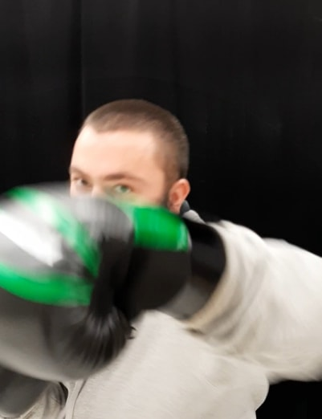

My Photos
Basics
My Photos
YouTube Tip Video
Examples of my non-expert photography

This is me before I had a double-dad bod
Using a slower shutter speed, images can be altered this way
Video Resources for New Photographers
Common Beginner Photographer Mistakes
Photography Basics in 10 Minutes
 Using a slower shutter speed, images can be altered this way
Using a slower shutter speed, images can be altered this way